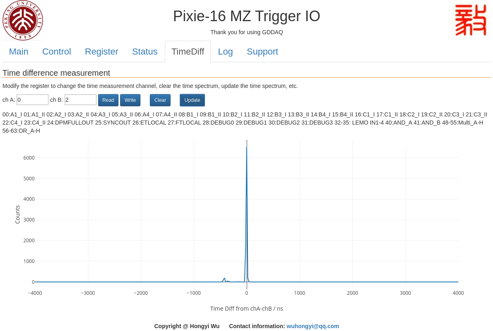

demo version 01¶
为了方便 GDDAQ 使用者熟悉 Pixie-16 模块的逻辑功能和 PKU 固件的特点，特别开发了本固件用于教学。用户可以在 https://github.com/wuhongyi/MZTIO/ 下载对应版本固件以及网页控制程序。
version/01 文件夹内包含固件 xillydemo.bit 和控制网页文件夹 www。本固件及其配套的控制程序仅可用于获取的学习，实验版本请与吴鸿毅联系。
MZTIO 前面板的最上面 12 个 RJ-45 连接器从上到下分别用以下符号表示：A1, A2, A3, A4, B1, B2, B3, B4, C1, C2, C3, C4。PKU 固件中 Pixie-16 模块上的 RJ-45 连接器输出 channel 0 和 channel 1 的多重性逻辑信号，分别用 _I 和 _II 表示。 则 A1_I 表示 MZTIO 第一个 RJ-45 端口连接的 Pixie-16 模块中 channel 0 的多重性逻辑。
控制寄存器¶

按钮 “Program FPGA” 用于初始化系统配置，当操作系统上电之后第一时间点击该按钮来完成系统的初始化。
可以保存 5 个实验设置参数，分别为 “Experimental setup 1-5”。通过修改寄存器进行实验逻辑配置之后，可以点击按钮 “Save” 保存，将会把当前 FPGA 寄存器参数保存到选定的实验配置中。按钮 “Load” 用于将选择的实验配置加载到 FPGA 中。
示波器监视部分用于选择 4 个 LEMO 输出通道的输出信号，下表中列出了当前所有可供选择的选项。点击 “Read” 按钮即可读取当前的设置参数，按钮 “Change” 用于将当前输入框的参数写入 FPGA 中。
vaule |
signal |
|---|---|
00 |
A1_I |
01 |
A1_II |
02 |
A2_I |
03 |
A2_II |
04 |
A3_I |
05 |
A3_II |
06 |
A4_I |
07 |
A4_II |
08 |
B1_I |
09 |
B1_II |
10 |
B2_I |
11 |
B2_II |
12 |
B3_I |
13 |
B3_II |
14 |
B4_I |
15 |
B4_II |
16 |
C1_I |
17 |
C1_II |
18 |
C2_I |
19 |
C2_II |
20 |
C3_I |
21 |
C3_II |
22 |
C4_I |
23 |
C4_II |
24 |
DPMFULLOUT |
25 |
SYNCOUT |
26 |
ETLOCAL |
27 |
FTLOCAL |
28 |
DEBUG0 |
29 |
DEBUG1 |
30 |
DEBUG2 |
31 |
DEBUG3 |
34 |
LEMO input 1 |
35 |
LEMO input 2 |
36 |
LEMO input 3 |
37 |
LEMO input 4 |
48 |
multi_A |
49 |
multi_B |
50 |
multi_C |
51 |
multi_D |
52 |
multi_E |
53 |
multi_F |
54 |
multi_G |
55 |
multi_H |
56 |
OR_A |
57 |
OR_B |
58 |
OR_C |
59 |
OR_D |
60 |
OR_E |
61 |
OR_F |
62 |
OR_G |
63 |
OR_H |
64 |
100M clock |
65 |
10M clock |
66 |
1M clock |
67 |
100k clock |
68 |
10k clock |
69 |
1k clock |
70 |
ets clock |
寄存器设置部分用于读取或者修改寄存器设置参数。读取寄存器时，需要输入要读取寄存器的地址，然后点击按钮 “Read”；修改寄存器时，输入要修改寄存器的地址以及参数值，然后点击按钮“Write”。
vaule |
function |
|---|---|
0x30 |
DelayAndExtend1([15:0]delay [31:16]stretch) |
0x31 |
DelayAndExtend2 |
0x32 |
DelayAndExtend3 |
0x33 |
DelayAndExtend4 |
0x34 |
DelayAndExtend5 |
0x35 |
DelayAndExtend6 |
0x36 |
DelayAndExtend7 |
0x37 |
DelayAndExtend8 |
0x38 |
DelayAndExtend9 |
0x39 |
DelayAndExtend10 |
0x3A |
DelayAndExtend11 |
0x3B |
DelayAndExtend12 |
0x3C |
DelayAndExtend13 |
0x3D |
DelayAndExtend14 |
0x3E |
DelayAndExtend15 |
0x3F |
DelayAndExtend16 |
0x45 |
external timestamp clock(0:10M 1:1M 2:100k 3: 10k 4:1k) |
0x50 |
TriggerModeFP(00:A1_I 01:A1_II 02:A2_I 03:A2_II 04:A3_I 05:A3_II 06:A4_I 07:A4_II 08:B1_I 09:B1_II 10:B2_I 11:B2_II 12:B3_I 13:B3_II 14:B4_I 15:B4_II 16:C1_I 17:C1_II 18:C2_I 19:C2_II 20:C3_I 21:C3_II 22:C4_I 23:C4_II) |
0x51 |
TriggerModeBP1 |
0x52 |
TriggerModeBP2 |
0x53 |
TriggerModeBP3 |
0x54 |
TriggerModeBP4 |
0x60 |
multi_A([23:0] bit mask 0:A1_I 1:A1_II 2:A2_I 3:A2_II 4:A3_I 5:A3_II 6:A4_I 7:A4_II 8:B1_I 9:B1_II 10:B2_I 11:B2_II 12:B3_I 13:B3_II 14:B4_I 15:B4_II 16:C1_I 17:C1_II 18:C2_I 19:C2_II 20:C3_I 21:C3_II 22:C4_I 23:C4_II [31:24] multi) |
0x61 |
multi_B |
0x62 |
multi_C |
0x63 |
multi_D |
0x64 |
multi_E |
0x65 |
multi_F |
0x66 |
multi_G |
0x67 |
multi_H |
0x68 |
OR_A([31:0] bit mask 0:A1_I 1:A1_II 2:A2_I 3:A2_II 4:A3_I 5:A3_II 6:A4_I 7:A4_II 8:B1_I 9:B1_II 10:B2_I 11:B2_II 12:B3_I 13:B3_II 14:B4_I 15:B4_II 16:C1_I 17:C1_II 18:C2_I 19:C2_II 20:C3_I 21:C3_II 22:C4_I 23:C4_II 24:multi_A 25:multi_B 26:multi_C 27:multi_D 28:multi_E 29:multi_F 30:multi_G 31:multi_H) |
0x69 |
OR_B |
0x6A |
OR_C |
0x6B |
OR_D |
0x6C |
OR_E |
0x6D |
OR_F |
0x6E |
OR_G |
0x6F |
OR_H |
网页也可用于 MZTIO 中 LINUX 操作系统的关闭，点击红色按钮 “SHUTDOWN OS” 将会立即关闭操作系统，此后将无法访问网页，需要重新上电才能开启操作系统。该按钮仅用于关闭机箱之前的关闭 MZTIO 操作系统。
黄色按钮 “UPDATE FW” 用于升级固件并重启操作系统。需要将要升级的固件放置在 /root 目录下，然后点击按钮。如果固件升级成功，网页将会提示操作系统将在一分钟之后重启，如果升级失败，则提示找不到固件文件。

触发率监视¶

该页面用于实时的计数率监视。当前版本包含了 4 个 LEMO 输入通道的计数率，4 个 LEMO 输出通道的计数率，Multi_A-H 的计数率，OR_A-H 的计数率， 12 个 RJ-45 连接器输入多重性信号的计数率等。
时间差谱测量¶
该页面实现了任意两个逻辑信号的时间差谱测量（chA-chB，时间差大于 0 表示 chA 信号晚于 chB 信号）。按钮 “Read” 用于读取信号源参数；按钮 “Write” 用于更改信号源；按钮 “Clear” 用于清除 FPGA 中的时间差谱，当更改信号源后必须清除 FPGA 中的时间差谱。按钮 “Update” 可用于从 FPGA 中读取当前的时间差谱并显示在网页上。
vaule |
signal |
|---|---|
00 |
A1_I |
01 |
A1_II |
02 |
A2_I |
03 |
A2_II |
04 |
A3_I |
05 |
A3_II |
06 |
A4_I |
07 |
A4_II |
08 |
B1_I |
09 |
B1_II |
10 |
B2_I |
11 |
B2_II |
12 |
B3_I |
13 |
B3_II |
14 |
B4_I |
15 |
B4_II |
16 |
C1_I |
17 |
C1_II |
18 |
C2_I |
19 |
C2_II |
20 |
C3_I |
21 |
C3_II |
22 |
C4_I |
23 |
C4_II |
24 |
DPMFULLOUT |
25 |
SYNCOUT |
26 |
ETLOCAL |
27 |
FTLOCAL |
28 |
DEBUG0 |
29 |
DEBUG1 |
30 |
DEBUG2 |
31 |
DEBUG3 |